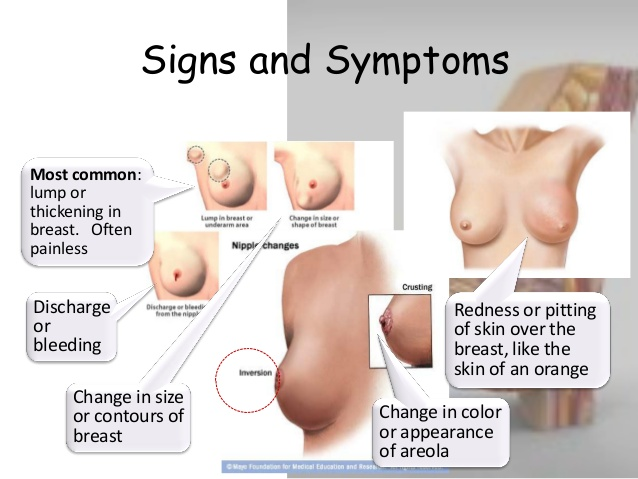

Breast cancer is cancer that develops from breast tissue.Signs of breast cancer may include a lump in the breast, a change in breast shape, dimpling of the skin, fluid coming from the nipple, or a red scaly patch of skin. In those with distant spread of the disease, there may be bone pain, swollen lymph nodes, shortness of breath, or yellow skin.
Risk factors for developing breast cancer include: female sex, obesity, lack of physical exercise, drinking alcohol, hormone replacement therapy during menopause, ionizing radiation, early age at first menstruation, having children late or not at all, older age, and family history.